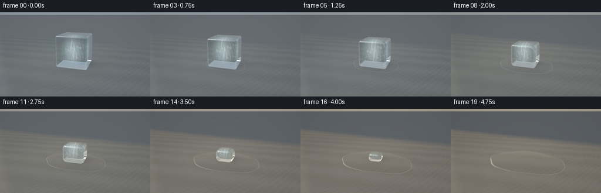
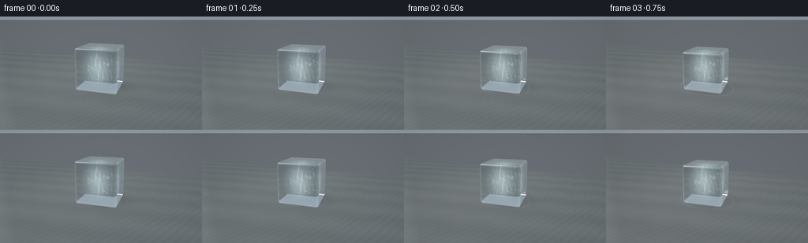

CODING AGENTS AS PIXEL WORLD MODELS
traex/GPT-6.1-Sol · phygen_096
点击播放 · 原生 RGB 像素
逐轮保存的候选
回放视频、检查图与代码变化。
每份候选均可单独播放。实际图片检查记录在下方工具轨迹中。
候选 01播放与检查图
点击播放 · 原生 RGB 像素


展开代码变化
--- 上一保存版本
+++ 本次保存版本
@@ -0,0 +1,307 @@
+"""Procedural optical study: a warming ice cube melting on a slate worktop.
+Only numpy geometry/optics and Pillow antialiasing are used.
+"""
+from pathlib import Path
+import json
+import numpy as np
+from PIL import Image
+from artifact_io import save
+
+ROOT = Path(__file__).resolve().parent
+SPEC = json.loads((ROOT / 'task_spec.json').read_text())
+W, H, N = SPEC['width'], SPEC['height'], SPEC['frames']
+SS = 3
+rng = np.random.default_rng(720)
+
+def unit(v):
+ return v / np.maximum(np.linalg.norm(v, axis=-1, keepdims=True), 1e-9)
+
+def smooth(a, b, x):
+ q = np.clip((x-a)/(b-a), 0, 1)
+ return q*q*(3-2*q)
+
+# Fixed camera; enough elevation to see the top and the spread of the meltwater.
+cam = np.array([3.6, 3.0, 6.7], np.float32)
+target = np.array([0., .64, 0.], np.float32)
+forward = unit(target-cam)
+right = unit(np.cross(forward, np.array([0., 1., 0.])))
+up = np.cross(right, forward)
+py, px = np.mgrid[:H*SS, :W*SS]
+xx = (px+.5-W*SS/2)/(218*SS)
+yy = -(py+.5-H*SS/2)/(218*SS)
+rays = unit(forward + xx[...,None]*right + yy[...,None]*up).reshape(-1,3)
+origins = np.broadcast_to(cam, rays.shape)
+angle = -.20
+rotation = np.array([[np.cos(angle),0,-np.sin(angle)], [0,1,0], [np.sin(angle),0,np.cos(angle)]], np.float32)
+light = unit(np.array([-3.5, 6., 3.0]))
+
+# Fixed air bubbles and tiny fracture inclusions, rather than frame-wise noise.
+bubbles = rng.uniform([-.68,.18,-.65],[.68,1.62,.65], (38,3))
+bubble_r = rng.uniform(.012,.034,38)
+bubble_r[:5] = [.055,.045,.041,.05,.035]
+
+
+def env(d, t):
+ y = np.clip(d[...,1], -1, 1)
+ warm = smooth(0, .95, t)
+ lo = np.array([.075,.095,.12])*(1-warm) + np.array([.115,.097,.075])*warm
+ hi = np.array([.48,.56,.63])*(1-warm) + np.array([.65,.58,.47])*warm
+ c = lo + ((y+1)*.5)[...,None]*(hi-lo)
+ # Large softbox/window, the reflected frame gives the ice its clean wet glints.
+ denom = np.maximum(-d[...,0],1e-4)
+ wy, wz = d[...,1]/denom, d[...,2]/denom
+ win = smooth(.09,.16,wy)*(1-smooth(1.7,1.85,wy))
+ win *= smooth(-.65,-.53,wz)*(1-smooth(.70,.84,wz)) * smooth(.0,.10,-d[...,0])
+ panes = 1 - .22*np.exp(-((wz-.04)/.022)**2)
+ panes *= 1 - .16*np.exp(-((wy-.83)/.024)**2)
+ tint = np.array([1.8,2.02,2.16])*(1-warm) + np.array([2.5,2.05,1.47])*warm
+ c += win[...,None]*panes[...,None]*tint
+ # Narrow second studio reflection.
+ dot = np.sum(d*unit(np.array([.75,.45,-.50])),axis=-1)
+ c += np.maximum(dot,0)[...,None]**90*np.array([.9,.98,1.04])
+ return c
+
+
+def floor_texture(x,z,t):
+ # Cool, finely veined matte slate gradually lit by warm afternoon light.
+ warm = smooth(0,1,t)
+ base = np.array([.133,.156,.165])*(1-warm)+np.array([.176,.161,.137])*warm
+ detail = (.004*np.sin(81*x+33*z)*np.sin(47*z-18*x)
+ + .005*np.sin(27*x+9*z) + .003*np.cos(138*z+52*x))
+ strata = .008*np.sin(3.7*z+.9*x+.35*np.sin(4*x))
+ grain = .0018*np.sin(403*x+189*z)*np.cos(286*z-198*x)
+ c = base + (detail+strata+grain)[...,None]
+ pool = np.exp(-((x+1.8)/4)**2-((z+1.6)/6)**2)
+ c += pool[...,None]*np.array([.034,.033,.028])
+ return c
+
+
+def water_profile(x,z,t):
+ q = np.clip(t/.965,0,1)**1.2
+ # Spread is monotonic, ending in a wide, low water pool.
+ rx = .97 + 1.51*(q**.66)
+ rz = .84 + 1.03*(q**.66)
+ a = np.arctan2(z/rz,x/rx)
+ irregular = 1 + .022*np.sin(3*a+.6) + .025*np.sin(5*a-1.3) + .010*np.cos(9*a)
+ r = np.sqrt((x/rx)**2+(z/rz)**2)/irregular
+ h = (.013+.115*q)*np.maximum(1-r*r,0)**.48
+ h += .010*np.exp(-((r-.948)/.030)**2)*(q+.10)
+ return r,h
+
+
+def surface(o,d,t,ice_size=0):
+ # Trace the worktop, with a shallow transparent water lens above it.
+ denom = d[:,1]
+ s = -o[:,1]/np.where(abs(denom)>1e-7,denom,1e-7)
+ valid = (s>0)&(denom<-.0001)
+ p = o+d*np.maximum(s,0)[:,None]
+ x,z = p[:,0],p[:,2]
+ c = env(d,t)
+ tex = floor_texture(x,z,t)
+ # A wall far behind the tabletop, gently out of focus geometrically.
+ rear = smooth(-8,-5,z)
+ wall = np.array([.135,.153,.169])*(1-t*.3)
+ tex = tex*rear[:,None]+wall*(1-rear[:,None])
+ # Broad cast shadow and a close, soft contact shadow.
+ si = ice_size
+ if si > .005:
+ shadow = np.exp(-((x-.32*si)/(si*.96+.13))**2-((z+.23*si)/(si*.75+.13))**2)
+ contact = np.exp(-(x/(si*.72+.10))**4-(z/(si*.68+.10))**4)
+ tex *= (1-.26*shadow-.30*contact)[:,None]
+ # Dry table is very slightly glossy.
+ nr = np.stack([d[:,0],-d[:,1],d[:,2]],axis=-1)
+ tex += env(nr,t)*.016
+ # Correct the intersection from the table plane to the gently domed water surface.
+ for _ in range(3):
+ r,h = water_profile(x,z,t)
+ sw = (h-o[:,1])/np.where(abs(denom)>1e-7,denom,1e-7)
+ pw = o+d*sw[:,None]
+ x,z = pw[:,0],pw[:,2]
+ r,h = water_profile(x,z,t)
+ wet = valid&(r<1)&(sw>0)
+ if np.any(wet):
+ ii = np.flatnonzero(wet)
+ xw, zw = x[ii], z[ii]
+ e=.003
+ hx=(water_profile(xw+e,zw,t)[1]-water_profile(xw-e,zw,t)[1])/(2*e)
+ hz=(water_profile(xw,zw+e,t)[1]-water_profile(xw,zw-e,t)[1])/(2*e)
+ normal=unit(np.stack([-hx,np.ones_like(hx),-hz],axis=-1))
+ dd=d[ii]
+ co=np.maximum(-np.sum(normal*dd,axis=-1),0)
+ fr=.020+.98*(1-co)**5
+ refl=dd+2*co[:,None]*normal
+ # Lens magnification / refraction of the stone visible beneath the water.
+ under=floor_texture(xw+hx*.065,zw+hz*.065,t)
+ if si > .005:
+ sh=np.exp(-((xw-.24*si)/(si+.13))**2-((zw+.18*si)/(si*.8+.13))**2)
+ under*= (1-.39*sh)[:,None]
+ water=under*(1-fr[:,None])*.90 + env(refl,t)*fr[:,None]
+ # Quiet meniscus glints and a short ring as the last drops collapse.
+ rim=np.exp(-((r[ii]-.984)/.011)**2)
+ side=np.clip(-.5*normal[:,0]+.5*normal[:,2]+.2,0,1)
+ water += (rim*(.075+.14*side))[:,None]*np.array([.70,.83,.87])
+ if t > .85:
+ rad=np.sqrt((xw/1.2)**2+(zw/.8)**2)
+ ring=np.exp(-((rad-(t-.85)*5.4)/.025)**2)*(.035*(1-smooth(.9,1,t)))
+ water+=ring[:,None]
+ edge=1-smooth(.978,1,r[ii])
+ tex[ii]=tex[ii]*(1-edge[:,None])+water*edge[:,None]
+ c[valid]=tex[valid]
+ return c
+
+
+def sdf(p, center, half, radius):
+ local=(p-center)@rotation
+ # Slightly thinner at the upper edges as liquid runs down the sides.
+ y=np.clip((local[:,1]+half[1])/(2*half[1]),0,1)
+ taper=1-.025*y*y
+ q=np.abs(local)-np.stack([np.full(len(p),half[0])*taper,
+ np.full(len(p),half[1]),
+ np.full(len(p),half[2])*taper],axis=-1)+radius
+ return np.linalg.norm(np.maximum(q,0),axis=-1)+np.minimum(np.max(q,axis=-1),0)-radius
+
+
+def normals(p,center,half,radius):
+ e=.0012
+ cols=[]
+ for k in range(3):
+ dp=np.zeros(3); dp[k]=e
+ cols.append(sdf(p+dp,center,half,radius)-sdf(p-dp,center,half,radius))
+ return unit(np.stack(cols,axis=-1))
+
+
+def refract(d,n,eta):
+ cs=-np.sum(d*n,axis=-1)
+ k=1-eta*eta*(1-cs*cs)
+ out=eta*d+(eta*cs-np.sqrt(np.maximum(k,0)))[:,None]*n
+ bad=k<0
+ out[bad]=d[bad]+2*cs[bad,None]*n[bad]
+ return unit(out)
+
+
+def render(t):
+ q=np.clip(t/.965,0,1)**1.16
+ remain=1-q
+ hw=.925*remain**.42
+ height=1.88*remain**.67
+ hd=.875*remain**.44
+ half=np.array([hw,height/2,hd])
+ center=np.array([.025*q,height/2+.018,.02*q])
+ radius=min(.095+.23*q, min(half)*.83) if remain>0 else 0
+ image=surface(origins,rays,t,hw)
+ if remain > .001:
+ # Bounding sphere limits expensive optical work to the object itself.
+ v=origins-center
+ b=np.sum(v*rays,axis=-1)
+ radius_bound=np.linalg.norm(half)+.04
+ disc=b*b-(np.sum(v*v,axis=-1)-radius_bound**2)
+ ids=np.flatnonzero(disc>0)
+ d=rays[ids]
+ dist=np.maximum(-b[ids]-np.sqrt(disc[ids]),0)
+ active=np.ones(len(ids),bool)
+ hit=np.zeros(len(ids),bool)
+ for _ in range(95):
+ ai=np.flatnonzero(active)
+ if not len(ai): break
+ p=cam+d[ai]*dist[ai,None]
+ sd=sdf(p,center,half,radius)
+ done=sd<.0007
+ hit[ai[done]]=True
+ active[ai[done]]=False
+ moving=ai[~done]
+ dist[moving]+=np.maximum(sd[~done]*.84,.0005)
+ active[moving[dist[moving]>12]]=False
+ ids=ids[hit]; d=d[hit]; dist=dist[hit]
+ p=cam+d*dist[:,None]
+ n=normals(p,center,half,radius)
+ cosine=np.clip(-np.sum(d*n,axis=-1),0,1)
+ reflection=d+2*cosine[:,None]*n
+ rf=env(reflection,t)
+ # Refraction through both the air/ice and the ice/air interfaces.
+ inside=refract(d,n,1/1.31)
+ travel=np.full(len(p),.004)
+ active=np.ones(len(p),bool)
+ for _ in range(105):
+ ai=np.flatnonzero(active)
+ if not len(ai): break
+ test=p[ai]+inside[ai]*travel[ai,None]
+ sd=sdf(test,center,half,radius)
+ done=(sd>-.0008)&(travel[ai]>.010)
+ active[ai[done]]=False
+ remaining=ai[~done]
+ travel[remaining]+=np.maximum(-sd[~done]*.87,.0025)
+ active[remaining[travel[remaining]>5]]=False
+ exitp=p+inside*travel[:,None]
+ exitnormal=normals(exitp,center,half,radius)
+ outdir=refract(inside,-exitnormal,1.31)
+ transmitted=surface(exitp+outdir*.004,outdir,t,hw)
+ transmittance=np.exp(-travel[:,None]*np.array([.12,.053,.025]))
+ transmitted=transmitted*transmittance+np.array([.19,.34,.40])*(1-transmittance)*.30
+ # A frozen, cloudy nucleus; optically sampled along the actual light path.
+ fog=np.zeros(len(p))
+ frost=np.zeros(len(p))
+ for f in np.linspace(.04,.96,16):
+ sample=p+inside*(travel*f)[:,None]
+ local=sample@rotation
+ x,y,z=local.T
+ cloud=np.exp(-((x+.1)/.44)**2-((y-.89)/.60)**2-((z+.02)/.37)**2)
+ texture=.65+.25*np.sin(19*x+13*y)*np.sin(22*z-7*y)+.10*np.sin(43*x+33*z)
+ fog+=cloud*texture/16
+ # Two intricate frozen fissures with branching, limited to small inner patches.
+ crack1=np.exp(-((x+.24*(y-.8)+.048*np.sin(11*y+6*z))/.007)**2)
+ patch1=np.exp(-((y-.95)/.57)**6-((z-.06)/.59)**6)
+ crack2=np.exp(-((z-.15+.32*x+.035*np.sin(17*x+9*y))/.007)**2)
+ patch2=np.exp(-((y-.95)/.58)**6-((x+.02)/.64)**6)
+ frost+=(crack1*patch1*.8+crack2*patch2*.55)/16
+ scattering=1-np.exp(-fog*travel*1.85)
+ frosted=np.clip(frost*travel*3.8,0,.45)
+ interior=np.array([.50,.65,.69])*(1-.14*t)+np.array([.11,.055,0])*t
+ transmitted=transmitted*(1-scattering[:,None])+interior*scattering[:,None]
+ transmitted=transmitted*(1-frosted[:,None])+np.array([.79,.85,.85])*frosted[:,None]
+ # Small visible air bubbles suspended in the initial material, clipped as it melts.
+ bubble=np.zeros(len(p)); rims=np.zeros(len(p))
+ for bc,br in zip(bubbles,bubble_r):
+ if sdf(bc[None],center,half,radius)[0]>-br: continue
+ delta=bc-p
+ a=np.sum(delta*inside,axis=-1)
+ close=np.sum(delta*delta,axis=-1)-a*a
+ visible=(a>0)&(a<travel)&(close<br*br)
+ ratio=np.maximum(close,0)/(br*br)
+ bubble=np.maximum(bubble,visible*(.10+.17*(1-ratio)))
+ rims=np.maximum(rims,visible*np.exp(-((ratio-.72)/.19)**2)*.28)
+ transmitted=transmitted*(1-bubble[:,None])+np.array([.15,.27,.30])*bubble[:,None]
+ transmitted+=rims[:,None]*np.array([.7,.8,.82])
+ fresnel=.018+.982*(1-cosine)**5
+ # Glossy melt skin: broad reflection, restrained rough highlight.
+ color=transmitted*(1-fresnel[:,None])+rf*fresnel[:,None]
+ hv=unit(light-d)
+ spec=np.maximum(np.sum(n*hv,axis=-1),0)**190
+ spec2=np.maximum(np.sum(n*hv,axis=-1),0)**28
+ color+=spec[:,None]*np.array([1.2,1.14,1.0]) + spec2[:,None]*.038
+ # Thin luminous rounded edges, visually distinct from the cloudy center.
+ local=(p-center)@rotation
+ edge=np.sort(np.abs(local)/np.maximum(half-radius*.55,.001),axis=-1)[:,-2]
+ edgelight=smooth(.90,1.025,edge)*(.3+.7*np.maximum(np.sum(n*light,axis=-1),0))
+ color+=edgelight[:,None]*np.array([.065,.10,.11])*(1-.25*t)
+ image[ids]=color
+ # Photographic response and a very light optical vignette.
+ image=image.reshape(H*SS,W*SS,3)
+ vignette=1-.12*((xx/.70)**2+(yy/.50)**2)
+ image*=np.clip(vignette,.75,1)[...,None]
+ rgb=np.clip(image,0,1)**(1/2.2)
+ rgb=np.uint8(np.clip(rgb*255+.5,0,255))
+ pil=Image.fromarray(rgb).resize((W,H),Image.Resampling.LANCZOS)
+ return np.asarray(pil)
+
+
+def main():
+ frames=[]
+ for i in range(N):
+ print(f'Rendering frame {i+1}/{N}',flush=True)
+ frames.append(render(i/(N-1)))
+ frames=np.stack(frames).astype(np.uint8)
+ save(frames,ROOT)
+ print('Saved RGB video artifacts.',flush=True)
+
+if __name__=='__main__':
+ main()
可观测工具轨迹
实际执行的命令与返回图片。
命令 1exit 0
/bin/bash -lc 'ls -la && cat prompt.txt && cat GENERATION_RULES.md && cat task_spec.json'
命令 2exit 0
/bin/bash -lc "cat artifact_io.py && cat player_template.html && python - <<'PY' import numpy,PIL print(numpy.__version__,PIL.__version__) PY"
命令 3exit 0
/bin/bash -lc 'fc-list | head; ls -la .tmp'
命令 4exit 0
/bin/bash -lc "cat > generate.py <<'PY'
\"\"\"Procedural optical study: a warming ice cube melting on a slate worktop.
Only numpy geometry/optics and Pillow antialiasing are used.
\"\"\"
from pathlib import Path
import json
import numpy as np
from PIL import Image
from artifact_io import save
ROOT = Path(__file__).resolve().parent
SPEC = json.loads((ROOT / 'task_spec.json').read_text())
W, H, N = SPEC['width'], SPEC['height'], SPEC['frames']
SS = 3
rng = np.random.default_rng(720)
def unit(v):
return v / np.maximum(np.linalg.norm(v, axis=-1, keepdims=True), 1e-9)
def smooth(a, b, x):
q = np.clip((x-a)/(b-a), 0, 1)
return q*q*(3-2*q)
# Fixed camera; enough elevation to see the top and the spread of the meltwater.
cam = np.array([3.6, 3.0, 6.7], np.float32)
target = np.array([0., .64, 0.], np.float32)
forward = unit(target-cam)
right = unit(np.cross(forward, np.array([0., 1., 0.])))
up = np.cross(right, forward)
py, px = np.mgrid[:H*SS, :W*SS]
xx = (px+.5-W*SS/2)/(218*SS)
yy = -(py+.5-H*SS/2)/(218*SS)
rays = unit(forward + xx[...,None]*right + yy[...,None]*up).reshape(-1,3)
origins = np.broadcast_to(cam, rays.shape)
angle = -.20
rotation = np.array([[np.cos(angle),0,-np.sin(angle)], [0,1,0], [np.sin(angle),0,np.cos(angle)]], np.float32)
light = unit(np.array([-3.5, 6., 3.0]))
# Fixed air bubbles and tiny fracture inclusions, rather than frame-wise noise.
bubbles = rng.uniform([-.68,.18,-.65],[.68,1.62,.65], (38,3))
bubble_r = rng.uniform(.012,.034,38)
bubble_r[:5] = [.055,.045,.041,.05,.035]
def env(d, t):
y = np.clip(d[...,1], -1, 1)
warm = smooth(0, .95, t)
lo = np.array([.075,.095,.12])*(1-warm) + np.array([.115,.097,.075])*warm
hi = np.array([.48,.56,.63])*(1-warm) + np.array([.65,.58,.47])*warm
c = lo + ((y+1)*.5)[...,None]*(hi-lo)
# Large softbox/window, the reflected frame gives the ice its clean wet glints.
denom = np.maximum(-d[...,0],1e-4)
wy, wz = d[...,1]/denom, d[...,2]/denom
win = smooth(.09,.16,wy)*(1-smooth(1.7,1.85,wy))
win *= smooth(-.65,-.53,wz)*(1-smooth(.70,.84,wz)) * smooth(.0,.10,-d[...,0])
panes = 1 - .22*np.exp(-((wz-.04)/.022)**2)
panes *= 1 - .16*np.exp(-((wy-.83)/.024)**2)
tint = np.array([1.8,2.02,2.16])*(1-warm) + np.array([2.5,2.05,1.47])*warm
c += win[...,None]*panes[...,None]*tint
# Narrow second studio reflection.
dot = np.sum(d*unit(np.array([.75,.45,-.50])),axis=-1)
c += np.maximum(dot,0)[...,None]**90*np.array([.9,.98,1.04])
return c
def floor_texture(x,z,t):
# Cool, finely veined matte slate gradually lit by warm afternoon light.
warm = smooth(0,1,t)
base = np.array([.133,.156,.165])*(1-warm)+np.array([.176,.161,.137])*warm
detail = (.004*np.sin(81*x+33*z)*np.sin(47*z-18*x)
+ .005*np.sin(27*x+9*z) + .003*np.cos(138*z+52*x))
strata = .008*np.sin(3.7*z+.9*x+.35*np.sin(4*x))
grain = .0018*np.sin(403*x+189*z)*np.cos(286*z-198*x)
c = base + (detail+strata+grain)[...,None]
pool = np.exp(-((x+1.8)/4)**2-((z+1.6)/6)**2)
c += pool[...,None]*np.array([.034,.033,.028])
return c
def water_profile(x,z,t):
q = np.clip(t/.965,0,1)**1.2
# Spread is monotonic, ending in a wide, low water pool.
rx = .97 + 1.51*(q**.66)
rz = .84 + 1.03*(q**.66)
a = np.arctan2(z/rz,x/rx)
irregular = 1 + .022*np.sin(3*a+.6) + .025*np.sin(5*a-1.3) + .010*np.cos(9*a)
r = np.sqrt((x/rx)**2+(z/rz)**2)/irregular
h = (.013+.115*q)*np.maximum(1-r*r,0)**.48
h += .010*np.exp(-((r-.948)/.030)**2)*(q+.10)
return r,h
def surface(o,d,t,ice_size=0):
# Trace the worktop, with a shallow transparent water lens above it.
denom = d[:,1]
s = -o[:,1]/np.where(abs(denom)>1e-7,denom,1e-7)
valid = (s>0)&(denom<-.0001)
p = o+d*np.maximum(s,0)[:,None]
x,z = p[:,0],p[:,2]
c = env(d,t)
tex = floor_texture(x,z,t)
# A wall far behind the tabletop, gently out of focus geometrically.
rear = smooth(-8,-5,z)
wall = np.array([.135,.153,.169])*(1-t*.3)
tex = tex*rear[:,None]+wall*(1-rear[:,None])
# Broad cast shadow and a close, soft contact shadow.
si = ice_size
if si > .005:
shadow = np.exp(-((x-.32*si)/(si*.96+.13))**2-((z+.23*si)/(si*.75+.13))**2)
contact = np.exp(-(x/(si*.72+.10))**4-(z/(si*.68+.10))**4)
tex *= (1-.26*shadow-.30*contact)[:,None]
# Dry table is very slightly glossy.
nr = np.stack([d[:,0],-d[:,1],d[:,2]],axis=-1)
tex += env(nr,t)*.016
# Correct the intersection from the table plane to the gently domed water surface.
for _ in range(3):
r,h = water_profile(x,z,t)
sw = (h-o[:,1])/np.where(abs(denom)>1e-7,denom,1e-7)
pw = o+d*sw[:,None]
x,z = pw[:,0],pw[:,2]
r,h = water_profile(x,z,t)
wet = valid&(r<1)&(sw>0)
if np.any(wet):
ii = np.flatnonzero(wet)
xw, zw = x[ii], z[ii]
e=.003
hx=(water_profile(xw+e,zw,t)[1]-water_profile(xw-e,zw,t)[1])/(2*e)
hz=(water_profile(xw,zw+e,t)[1]-water_profile(xw,zw-e,t)[1])/(2*e)
normal=unit(np.stack([-hx,np.ones_like(hx),-hz],axis=-1))
dd=d[ii]
co=np.maximum(-np.sum(normal*dd,axis=-1),0)
fr=.020+.98*(1-co)**5
refl=dd+2*co[:,None]*normal
# Lens magnification / refraction of the stone visible beneath the water.
under=floor_texture(xw+hx*.065,zw+hz*.065,t)
if si > .005:
sh=np.exp(-((xw-.24*si)/(si+.13))**2-((zw+.18*si)/(si*.8+.13))**2)
under*= (1-.39*sh)[:,None]
water=under*(1-fr[:,None])*.90 + env(refl,t)*fr[:,None]
# Quiet meniscus glints and a short ring as the last drops collapse.
rim=np.exp(-((r[ii]-.984)/.011)**2)
side=np.clip(-.5*normal[:,0]+.5*normal[:,2]+.2,0,1)
water += (rim*(.075+.14*side))[:,None]*np.array([.70,.83,.87])
if t > .85:
rad=np.sqrt((xw/1.2)**2+(zw/.8)**2)
ring=np.exp(-((rad-(t-.85)*5.4)/.025)**2)*(.035*(1-smooth(.9,1,t)))
water+=ring[:,None]
edge=1-smooth(.978,1,r[ii])
tex[ii]=tex[ii]*(1-edge[:,None])+water*edge[:,None]
c[valid]=tex[valid]
return c
def sdf(p, center, half, radius):
local=(p-center)@rotation
# Slightly thinner at the upper edges as liquid runs down the sides.
y=np.clip((local[:,1]+half[1])/(2*half[1]),0,1)
taper=1-.025*y*y
q=np.abs(local)-np.stack([np.full(len(p),half[0])*taper,
np.full(len(p),half[1]),
np.full(len(p),half[2])*taper],axis=-1)+radius
return np.linalg.norm(np.maximum(q,0),axis=-1)+np.minimum(np.max(q,axis=-1),0)-radius
def normals(p,center,half,radius):
e=.0012
cols=[]
for k in range(3):
dp=np.zeros(3); dp[k]=e
cols.append(sdf(p+dp,center,half,radius)-sdf(p-dp,center,half,radius))
return unit(np.stack(cols,axis=-1))
def refract(d,n,eta):
cs=-np.sum(d*n,axis=-1)
k=1-eta*eta*(1-cs*cs)
out=eta*d+(eta*cs-np.sqrt(np.maximum(k,0)))[:,None]*n
bad=k<0
out[bad]=d[bad]+2*cs[bad,None]*n[bad]
return unit(out)
def render(t):
q=np.clip(t/.965,0,1)**1.16
remain=1-q
hw=.925*remain**.42
height=1.88*remain**.67
hd=.875*remain**.44
half=np.array([hw,height/2,hd])
center=np.array([.025*q,height/2+.018,.02*q])
radius=min(.095+.23*q, min(half)*.83) if remain>0 else 0
image=surface(origins,rays,t,hw)
if remain > .001:
# Bounding sphere limits expensive optical work to the object itself.
v=origins-center
b=np.sum(v*rays,axis=-1)
radius_bound=np.linalg.norm(half)+.04
disc=b*b-(np.sum(v*v,axis=-1)-radius_bound**2)
ids=np.flatnonzero(disc>0)
d=rays[ids]
dist=np.maximum(-b[ids]-np.sqrt(disc[ids]),0)
active=np.ones(len(ids),bool)
hit=np.zeros(len(ids),bool)
for _ in range(95):
ai=np.flatnonzero(active)
if not len(ai): break
p=cam+d[ai]*dist[ai,None]
sd=sdf(p,center,half,radius)
done=sd<.0007
hit[ai[done]]=True
active[ai[done]]=False
moving=ai[~done]
dist[moving]+=np.maximum(sd[~done]*.84,.0005)
active[moving[dist[moving]>12]]=False
ids=ids[hit]; d=d[hit]; dist=dist[hit]
p=cam+d*dist[:,None]
n=normals(p,center,half,radius)
cosine=np.clip(-np.sum(d*n,axis=-1),0,1)
reflection=d+2*cosine[:,None]*n
rf=env(reflection,t)
# Refraction through both the air/ice and the ice/air interfaces.
inside=refract(d,n,1/1.31)
travel=np.full(len(p),.004)
active=np.ones(len(p),bool)
for _ in range(105):
ai=np.flatnonzero(active)
if not len(ai): break
test=p[ai]+inside[ai]*travel[ai,None]
sd=sdf(test,center,half,radius)
done=(sd>-.0008)&(travel[ai]>.010)
active[ai[done]]=False
remaining=ai[~done]
travel[remaining]+=np.maximum(-sd[~done]*.87,.0025)
active[remaining[travel[remaining]>5]]=False
exitp=p+inside*travel[:,None]
exitnormal=normals(exitp,center,half,radius)
outdir=refract(inside,-exitnormal,1.31)
transmitted=surface(exitp+outdir*.004,outdir,t,hw)
transmittance=np.exp(-travel[:,None]*np.array([.12,.053,.025]))
transmitted=transmitted*transmittance+np.array([.19,.34,.40])*(1-transmittance)*.30
# A frozen, cloudy nucleus; optically sampled along the actual light path.
fog=np.zeros(len(p))
frost=np.zeros(len(p))
for f in np.linspace(.04,.96,16):
sample=p+inside*(travel*f)[:,None]
local=sample@rotation
x,y,z=local.T
cloud=np.exp(-((x+.1)/.44)**2-((y-.89)/.60)**2-((z+.02)/.37)**2)
texture=.65+.25*np.sin(19*x+13*y)*np.sin(22*z-7*y)+.10*np.sin(43*x+33*z)
fog+=cloud*texture/16
# Two intricate frozen fissures with branching, limited to small inner patches.
crack1=np.exp(-((x+.24*(y-.8)+.048*np.sin(11*y+6*z))/.007)**2)
patch1=np.exp(-((y-.95)/.57)**6-((z-.06)/.59)**6)
crack2=np.exp(-((z-.15+.32*x+.035*np.sin(17*x+9*y))/.007)**2)
patch2=np.exp(-((y-.95)/.58)**6-((x+.02)/.64)**6)
frost+=(crack1*patch1*.8+crack2*patch2*.55)/16
scattering=1-np.exp(-fog*travel*1.85)
frosted=np.clip(frost*travel*3.8,0,.45)
interior=np.array([.50,.65,.69])*(1-.14*t)+np.array([.11,.055,0])*t
transmitted=transmitted*(1-scattering[:,None])+interior*scattering[:,None]
transmitted=transmitted*(1-frosted[:,None])+np.array([.79,.85,.85])*frosted[:,None]
# Small visible air bubbles suspended in the initial material, clipped as it melts.
bubble=np.zeros(len(p)); rims=np.zeros(len(p))
for bc,br in zip(bubbles,bubble_r):
if sdf(bc[None],center,half,radius)[0]>-br: continue
delta=bc-p
a=np.sum(delta*inside,axis=-1)
close=np.sum(delta*delta,axis=-1)-a*a
visible=(a>0)&(a<travel)&(close<br*br)
ratio=np.maximum(close,0)/(br*br)
bubble=np.maximum(bubble,visible*(.10+.17*(1-ratio)))
rims=np.maximum(rims,visible*np.exp(-((ratio-.72)/.19)**2)*.28)
transmitted=transmitted*(1-bubble[:,None])+np.array([.15,.27,.30])*bubble[:,None]
transmitted+=rims[:,None]*np.array([.7,.8,.82])
fresnel=.018+.982*(1-cosine)**5
# Glossy melt skin: broad reflection, restrained rough highlight.
color=transmitted*(1-fresnel[:,None])+rf*fresnel[:,None]
hv=unit(light-d)
spec=np.maximum(np.sum(n*hv,axis=-1),0)**190
spec2=np.maximum(np.sum(n*hv,axis=-1),0)**28
color+=spec[:,None]*np.array([1.2,1.14,1.0]) + spec2[:,None]*.038
# Thin luminous rounded edges, visually distinct from the cloudy center.
local=(p-center)@rotation
edge=np.sort(np.abs(local)/np.maximum(half-radius*.55,.001),axis=-1)[:,-2]
edgelight=smooth(.90,1.025,edge)*(.3+.7*np.maximum(np.sum(n*light,axis=-1),0))
color+=edgelight[:,None]*np.array([.065,.10,.11])*(1-.25*t)
image[ids]=color
# Photographic response and a very light optical vignette.
image=image.reshape(H*SS,W*SS,3)
vignette=1-.12*((xx/.70)**2+(yy/.50)**2)
image*=np.clip(vignette,.75,1)[...,None]
rgb=np.clip(image,0,1)**(1/2.2)
rgb=np.uint8(np.clip(rgb*255+.5,0,255))
pil=Image.fromarray(rgb).resize((W,H),Image.Resampling.LANCZOS)
return np.asarray(pil)
def main():
frames=[]
for i in range(N):
print(f'Rendering frame {i+1}/{N}',flush=True)
frames.append(render(i/(N-1)))
frames=np.stack(frames).astype(np.uint8)
save(frames,ROOT)
print('Saved RGB video artifacts.',flush=True)
if __name__=='__main__':
main()
PY
OPENBLAS_NUM_THREADS=1 python generate.py"命令 5exit 0
/bin/bash -lc "python - <<'PY'
from pathlib import Path
import numpy as np
from PIL import Image
p=Path('.')
a=np.load('pixels.npz')['pixels']
assert a.shape==(144,256,20)
assert len(list((p/'frames').glob('*.png')))==20
for f in sorted((p/'frames').glob('*.png')):
im=Image.open(f)
assert im.mode=='RGB' and im.size==(256,144)
print('Validated: 20 RGB frames, 256Ã144, 4 fps / 5 seconds.')
print('Files:', ', '.join(str(x) for x in [p/'generate.py',p/'pixels.npz',p/'index.html',p/'inspection.png']))
PY
command -v ffmpeg || true"保存候选 1 份；完成命令 5 次；可验证图片返回 0 张。原始 API 响应与完整日志保留在本地。